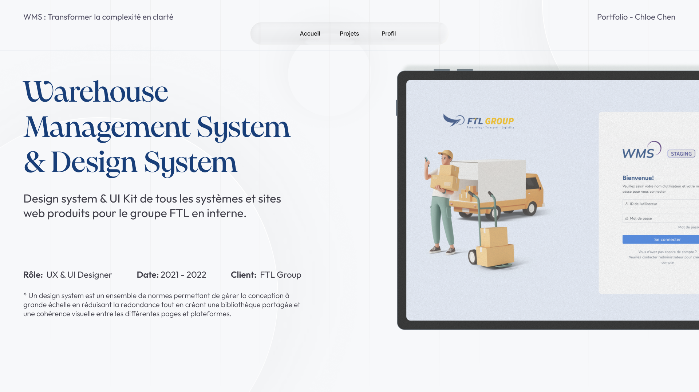
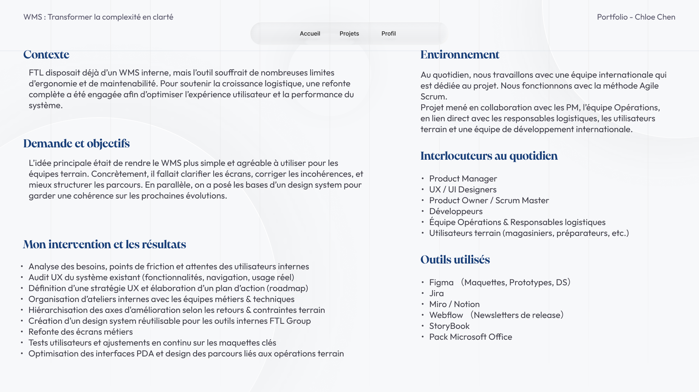
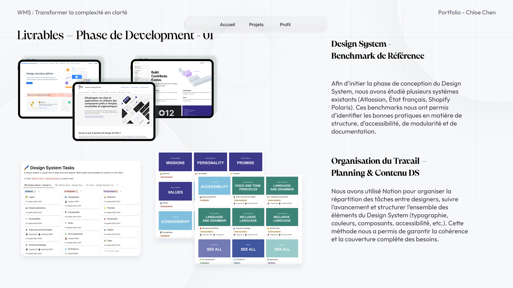
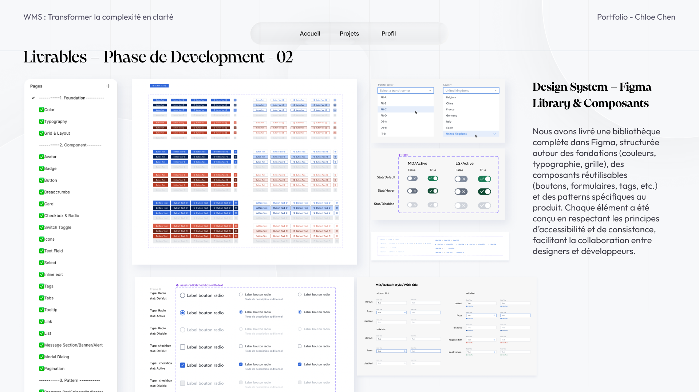
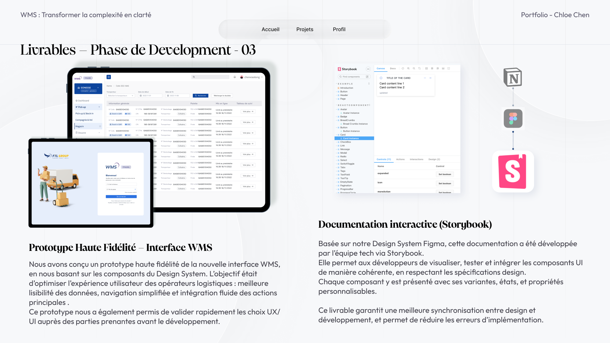

Multiple WMS interfaces were evolving without a shared visual and interaction language.
Warehouse Management System · Design System
Building a scalable interface system for complex logistics tools.
I helped structure a WMS product experience into a reusable design system, turning scattered interface patterns into shared components, clearer workflows and a more reliable handoff process.

Create consistency without slowing down delivery or over-designing a still-evolving product.
A reusable Figma library, documented patterns and a clearer collaboration model for product teams.
01
Start with the operational reality, not the UI surface.
The product served warehouse teams working with dense information, repetitive actions and strict operational constraints. Before proposing components, I mapped where inconsistency was creating friction for users, designers and developers.

Context & objectivesA reusable case-study structure: understand the system, define priorities, build patterns, then make adoption easier.
Discovery
Audit the current product language
Interviews, interface review and benchmark analysis revealed where the experience was fragmented.
Definition
Turn findings into system priorities
I translated research into a roadmap: what to standardize first, what to document and what to defer.
Development
Build the component foundation
Core UI patterns were organized into reusable Figma components with clearer states and usage logic.
Delivery
Make adoption part of the design
Documentation and feedback loops helped the system become usable by teams, not just polished in Figma.
Key decisions
Where the design work became strategic.
Use audit as a product alignment tool
The interface audit was not only visual cleanup. It helped the team see duplicated patterns, unclear states and inconsistent workflow logic.
Prioritize reusable patterns over isolated screens
Instead of redesigning pages one by one, the work focused on components that could support tables, forms, filters, navigation and operational feedback.
Design the handoff model with the system
A design system only works when people can use it. Documentation, naming and collaboration channels were treated as part of the product experience.
System building
From scattered UI decisions to a shared product language.
The system connected visual foundations, component rules and product scenarios. This made the WMS interface easier to extend while keeping screens consistent across teams and features.



Impact
A system designed for clarity, reuse and team adoption.
The work gave the WMS product a stronger foundation: fewer one-off UI decisions, clearer component logic and a more structured way for design and development to collaborate.
01 More consistent product screens
02 Faster design decisions through reusable components
03 Clearer handoff and documentation practices